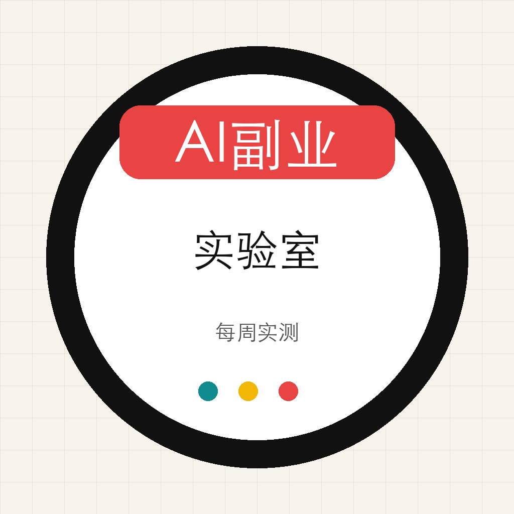

发现需求
从小红书、GitHub、YouTube、X 和真实评论里找具体痛点，而不是追泛热点。

AI副业实验室Method
从小红书、GitHub、YouTube、X 和真实评论里找具体痛点，而不是追泛热点。
每次只交付一个能用的小东西：网页工具、模板、清单、自动化流程或复盘表。
用内容发布收集收藏、评论、私信和领取数据，拒绝虚构案例。
有反馈就升级成模板包、工具或服务；没反馈就记录失败原因并换方向。
Experiment 001
这个实验验证一个假设：很多人不是缺 AI 工具，而是缺一个安全、可发布、可复盘的内容结构。
想低成本尝试 AI 副业，但不知道第一篇内容怎么写的人。
标题生成、内容角度、发布前合规检查、免费模板。
收藏、评论、私信、模板领取、网站访问。
Assets
Compliance
不承诺收益
不教违规玩法
不碰投资建议
不虚构数据
不公开隐私
不制造焦虑